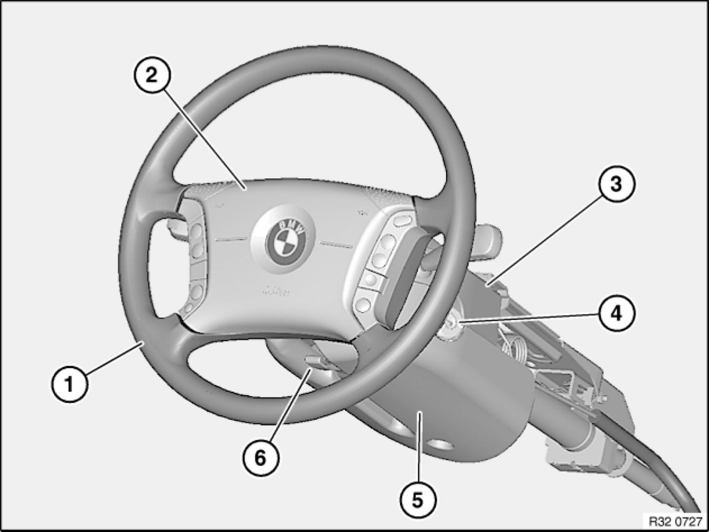

Operation CHARM
: Car repair manuals for everyone.
Home
>>
BMW
>>
2007
>>
X3 3.0si (E83) L6-3.0L (N52K)
>>
Repair and Diagnosis
>>
Steering and Suspension
>>
Steering
>>
Locations
>>
Overview of Steering Wheel/Casing Components/Lock Cylinder
Overview of Steering Wheel/Casing Components/Lock Cylinder
32 .. .. - Overview of steering wheel / casing components / lock cylinder
